Proposta atualizada: o site e a presença no Google, agora com um atendente no WhatsApp que conversa como a recepção e marca a consulta sozinho, a qualquer hora.
Proposta preparada para a MedicMais Sobradinho-DF · versão 2 · outubro de 2026

Site novo, Google Meu Negócio, endereço certo em todo lugar e vídeos editados a partir do que a equipe grava.
Atendente de WhatsApp com inteligência artificial: entende o que o paciente escreve, tira dúvidas, oferece horários livres e marca a consulta.
O CRM separado da proposta anterior. Ele vem dentro do atendente: cada conversa já fica registrada com etapa, consulta e retorno.
| “Digite 1 para agendar” | Entende “quebrei o dente, queria ver implante” |
| Manda o link e some | Oferece horários livres e marca na agenda |
| Não sabe o que fazer com dúvida | Responde dúvidas e passa para a recepção quando precisa |
| Termina no “obrigado” | Termina com dia, hora, endereço e lembrete |
Ferramentas de robô de WhatsApp cobram de R$ 150 a R$ 600 por mês só pela plataforma, fora a inteligência artificial. Construímos a estrutura com código próprio, e a clínica paga só o uso.
Servidor, inteligência artificial, mensagens de lembrete (até 1.000 por mês), manutenção e ajustes. As respostas às mensagens dos pacientes não têm custo de WhatsApp.
A Meta pede a verificação da empresa para liberar o WhatsApp oficial com lembretes. Com o CNPJ inapto, a verificação pode ser negada. O Google também pode pedir documento para confirmar o perfil.
Orientamos o passo a passo com o contador e começamos pelo que não depende disso: regras do atendente, agenda e site. A ligação com o WhatsApp entra assim que a Receita atualizar.
Site publicado no endereço da clínica, com letra grande, botões fáceis e WhatsApp direto. A prévia já está pronta.
Ganho: um endereço oficial que leva direto ao atendente.
A clínica certa e ativa onde o paciente procura: Google, Instagram, Facebook e WhatsApp, com o mesmo endereço, telefone e horário.
Ganho: aparecer no mapa quando procurarem dentista em Sobradinho.
Pode ser dividido em 3 vezes. Domínio .com.br (cerca de R$ 40 por ano) no nome da clínica.
Contrato mínimo de 6 meses. Atendente incluso: servidor, inteligência artificial e até 1.000 lembretes por mês. Vídeo extra além dos 8: R$ 70 cada. A clínica grava e nós editamos.
Aprovando, começamos pelo site e pelas regras do atendente na mesma semana. O protótipo do atendente já funciona e podemos mostrar ao vivo.